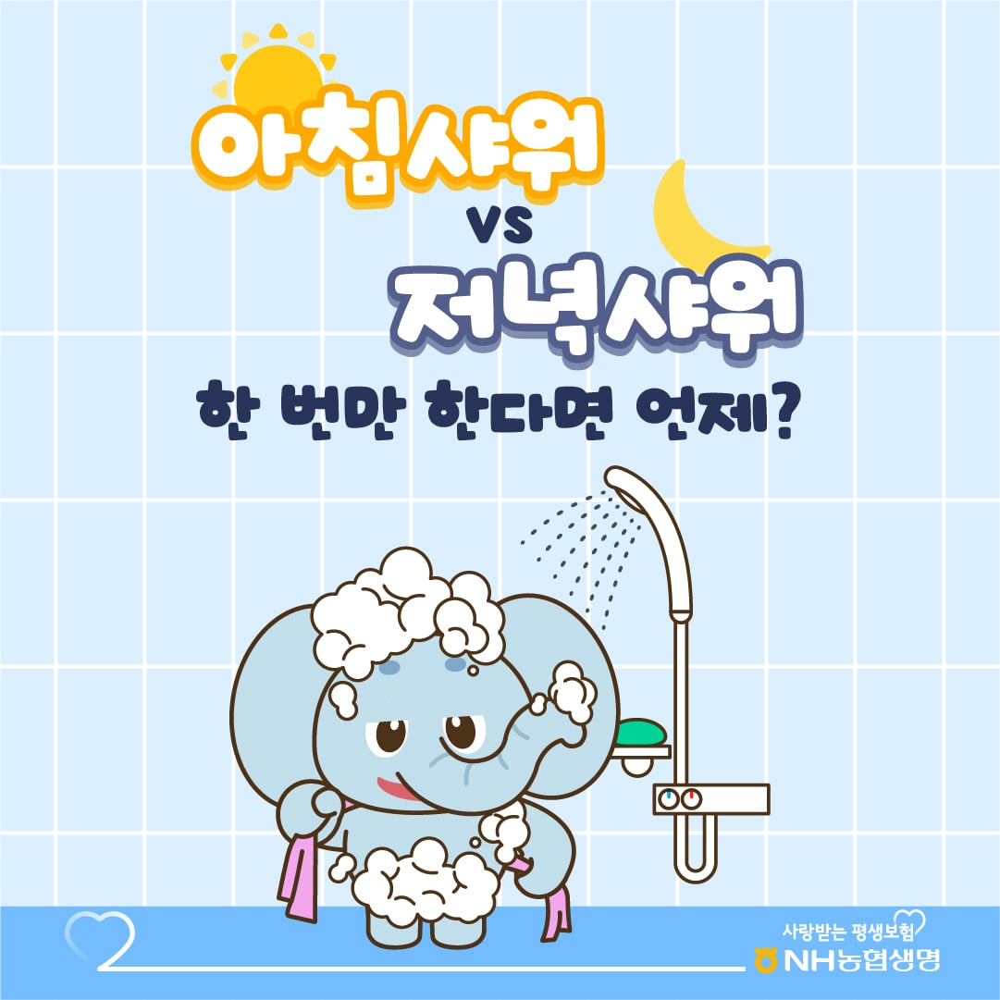

아침 집 찬물샤워
저녁 헬스장 뜨물샤워
중요한 외출자리가 있으면 아침
일상이면 저녁
기본적으로 집에 오자마자 밖에서 들러붙은 먼지와 땀을 씻어내고 집안은 깨끗하게 유지
중요한 만남이 있을 때는 그쪽 우선순위가 더 높으니 씻고 나가야하고
밖에서 먼지 다 뒤집어쓰고 와서 안씻고 자면 찝찝하지 않나?
한번만 가능하다 치면 자기 전에 해야지
자면서 땀을 흘린다 해도 안씻고 흘리는 땀보다 씻은후 흘린땀이 더 깨끗함
아침에만 한다는 사람은
외부를 돌아다닌 그상태로 그냥 잔다는거야?
둘다하는데 둘중 하나고르라면 저녁에 할듯
하루종일 먼지 맞고 땀흘렸는데 샤워안하고 잔다?
침대 이불 등등 개쓋될거같은데
회사가야하는데 안씻고갈꺼야?
양자택일 강제면 저녁
밤에만 하는건
자면서 흘린 땀같은거 그대로 가지고 나가는것?
아침에만 하는건
하루종일 바깥먼지 뒤집어쓰고 그대로 잠자는것?
저녁샤워 안하면 침대이불 개작살날걸
샤워를 하면 안되지만 빨래를 하지말란 법은 없으니까
두 번 하는 게 가장 좋지만 결국 중요한 업무상 중요한 미팅이나 약속이 있으면 아침에 때빼고 광내는 게 맞는 거 가틈
근데 자고 나면 머리 새집생기지 않냐
나는 저녁에 제대로 씻고 아침에는 린스만함
때려죽어도 두번 다 함
난 둘다 하는데
저녁에 하는 샤워가 청결을 위한거고
아침에는 머리 감을건데 어차피 그럴거면 옷다벗고 샤워하는게 뒷처리든 씻는 과정이든 더 편하지 않나?
자고 일어나면 머리 떡지는데 당연히 출근전 샤워지
저녁은 청결 아침은 타인에게 보이기 위함.
당연히 저녁이지. 씻고나서 자야지.
좋은냄새 맡으면서 자야돼
녘 아니라고
딱 한번만 할수있다면… 저녁이 낫지
왜 한번만 해야해?
안씻는놈이 만든거지
기본이 아침저녁 샤워인데
아침 저녁에 보통 하루 2번 아니냐. 아침에는 까치집 머리땜에 저녁에는 땀 먼지 찝찝해서 씻어야지. 주말에 나갈일 없으면 저녁에 한번하는거고
노가다꾼이라 저녁샤워함
둘다해야지 개드럽네
소변기 가서 오줌 싸면 소변 증기 맞고 변기에서 일보면 변기 시트 공유하는데 저녁이지
시발새끼들아 두번하라고
이불빨래 3주에 한번씩하면 저녁에 해도 상관없다고 생각함 ㅇㅇ
자면서 굳이?
ㅋㅋㅋ 와 어렵네
두번한다는 사람 많은데 우리나라가 샤워횟수 많은 편이고 두번하면 오히려 피부건강에 안좋아 ~많이 씻으면 좋은게 아니여
두번 이러는 애들은 대체 뭐냐
글 한 줄을 안 읽는건가
큰 명절때마다 하면 되는거 아니였음??
아침이지
머리 새집이거나 떡진 상태로 일할 수는없잖아
굳이 고르자면 1월 1일 아침
걍 한번만 꼭 해야한다면 아침이라고 생각함
이불이나 베갯잇은 주기적으로 갈아주면 되는거고 샤워를 안한다 뿐이지 다 벗고 자는건 아니니까
자는 사이에 내 몸에서 배어나온 땀이랑 채취같은거를 나가지 않으면 좀 찝찝함
별로 황밸까진 아닌듯한데 ㅋㅋ